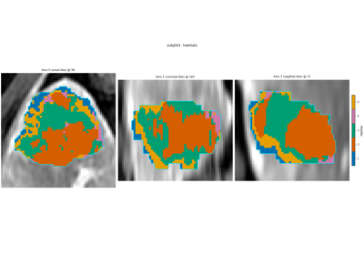

Advanced#
Each analysis stage (extract through postprocess), backends (process,
resume, GPU cap, failure isolation), embedding HABIT in your pipeline,
and exporting results with describe_methods.


Export results and draft the methods paragraph
Export results and draft the methods paragraph